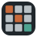

Gaming
Everything gaming, kept apart from my other tools.
Guides and tools

Craftionary All Minecraft recipes, where to find items and ores, ready /give commands, plus a banner and pot workshop. Open News Guide
BL4 Vault-Handbuch
Borderlands 4 handbook: meta builds, legendaries and Pearls with location and drop chance, raids, farm planner.
Open
News
Guide
MW4 Rüstkammer
For Call of Duty: Modern Warfare 4. Meta builds, attachments, time to kill and a class editor.
Open
News
Guide
Fadenkreuz
Your own crosshair in the centre of the screen, over your game. You draw it yourself, clicks go right through.
Download
News
Guide
Real_RAM_cooler
An honest RAM tool for Windows. The placebo button is called exactly that.
Download
News
Guide
More guides to come
More guides are coming, on request too, if the game grabs me as well.